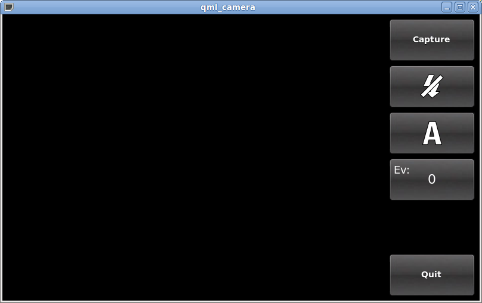

QML Camera Example
The Camera Example shows how to use the API to capture a still image or video.

This example demonstrates how to use the Qt Multimedia QML API to access camera functions. It shows how to change settings and to capture images.
Running the Example
To run the example from Qt Creator, open the Welcome mode and select the example from Examples. For more information, visit Building and Running an Example.
Application Structure
Most of the QML code supports the user interface for this application with the camera types being mostly found in declarative-camera.qml and CaptureControls.qml.
CaptureControls, which is implemented in CaptureControls.qml, generates a column on the right hand side of the screen which includes control buttons for focus (not initially visible), capture, flash modes, white balance, exposure compensation, and if a preview is available, a preview button. The last button exits from the application.
Files:
- declarative-camera/CameraButton.qml
- declarative-camera/CameraPropertyButton.qml
- declarative-camera/CameraPropertyPopup.qml
- declarative-camera/FocusButton.qml
- declarative-camera/PhotoCaptureControls.qml
- declarative-camera/PhotoPreview.qml
- declarative-camera/VideoCaptureControls.qml
- declarative-camera/VideoPreview.qml
- declarative-camera/ZoomControl.qml
- declarative-camera/declarative-camera.qml
- declarative-camera/qmlcamera.cpp
- declarative-camera/declarative-camera.pro
- declarative-camera/declarative-camera.qmlproject
- declarative-camera/declarative-camera.qrc
Images:
- declarative-camera/images/camera_auto_mode.png
- declarative-camera/images/camera_camera_setting.png
- declarative-camera/images/camera_flash_auto.png
- declarative-camera/images/camera_flash_fill.png
- declarative-camera/images/camera_flash_off.png
- declarative-camera/images/camera_flash_redeye.png
- declarative-camera/images/camera_white_balance_cloudy.png
- declarative-camera/images/camera_white_balance_flourescent.png
- declarative-camera/images/camera_white_balance_incandescent.png
- declarative-camera/images/camera_white_balance_sunny.png
- declarative-camera/images/toolbutton.png
{kind=link}
{kind=link}
{kind=link}
{kind=link}
{kind=link}
{kind=link}
{kind=link}
{kind=link}
{kind=link}
{kind=link}
{kind=link}